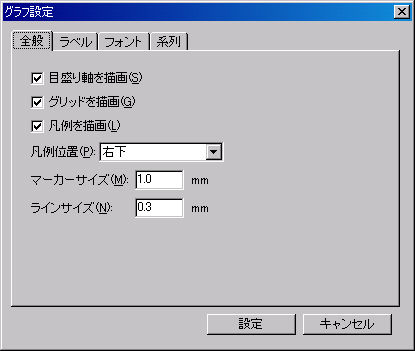
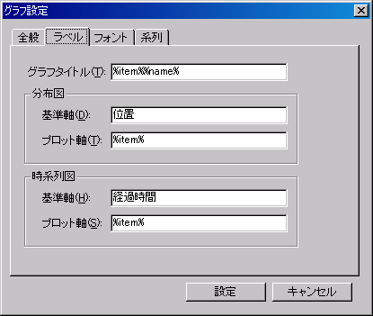
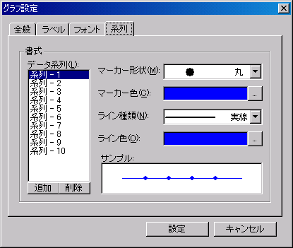
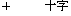
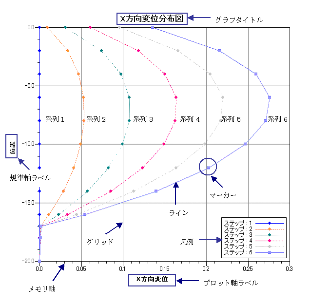

グラフ設定
分布図・時系列図の描画設定を選択すると下画面が表示され、グラフの設定を行うことができます。グラフに関する設定は分布図・時系列図で共用します。

<全般>
グラフ全般に関する設定を行います。以下に設定項目を示します。

| 項目 |
説明 |
| メモリ軸を描画 |
メモリ軸を描画する場合にチェックをします。 |
| グリッドを描画 |
グリッドを描画する場合にチェックをします。 |
| 凡例を描画 |
凡例を描画する場合にチェックをします。 |
| 凡例位置 |
凡例の位置を選択します。左上・中央上・右上・左下・中央下・右下から選択できます。 |
| マーカーサイズ |
系列のマーカーサイズを入力します。 |
| ラインサイズ |
系列のラインサイズを入力します。 |
[設定値の目安]
マーカーと線のサイズに関する設定値の目安を以下に示します。
| 線 |
マーカー |
| 内容 |
値 |
内容 |
値 |
| 細い |
0.5 |
小さい |
1.0 |
| 普通 |
1.0 |
普通 |
1.5 |
| 太い |
2.0 |
大きい |
3.0 |
<ラベル>
グラフのラベルに関する設定を行います。表示する文字列にはマクロ文字を使用することができます。以下に設定項目を示します。

| 項目 |
説明 |
| グラフタイトル |
タイトルに表示させる文字列を入力します。 |
| 規準軸 |
規準軸に表示させる文字列を入力します。規準軸は分布図では位置、時系列図では時間になります。 |
| プロット軸 |
プロット軸に表示させる文字列を入力します。プロット軸は計算値になります。 |
[グラフ(分布図・時系列図)ラベルマクロ一覧]
グラフラベルに使用できるマクロ文字列を以下に示します。
| マクロ |
説明 |
| %file% |
読み込まれてる計算結果ファイル名称(パスは除く) |
| %name% |
分布図の場合は"分布図"、時系列図の場合は"時系列図" |
| %title% |
解析タイトル |
| %item% |
グラフアイテム名称 |
<フォント>
グラフのフォントに関する設定を行います。以下の項目のフォント設定を行うことができます。コンボボックスからフォントを変更したい項目を選択し、各フォントの設定を行います。

<系列>
系列の設定を行います。以下にデータ系列に指定できる項目を示します。＜参照＞ボタンをクリックすると、[色の設定]ダイアログボックスが表示され、色の設定を行うことができます。データ系列は登録することができ、次回起動時にも設定は有効です。データ系列が登録されていない場合には、赤線の赤丸マーカーで系列が表示されます。＜追加＞ボタンをクリックすると系列が追加され、＜削除＞ボタンをクリックすると選択中の系列が削除されます。

| マーカー |
| 種類 |
なし |
|
|
|
 |
| 色 |
任意色 |
| サイズ |
任意値(共通) |
<書式変更可能な項目>
